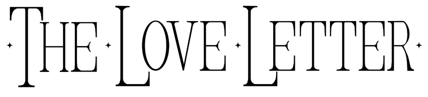
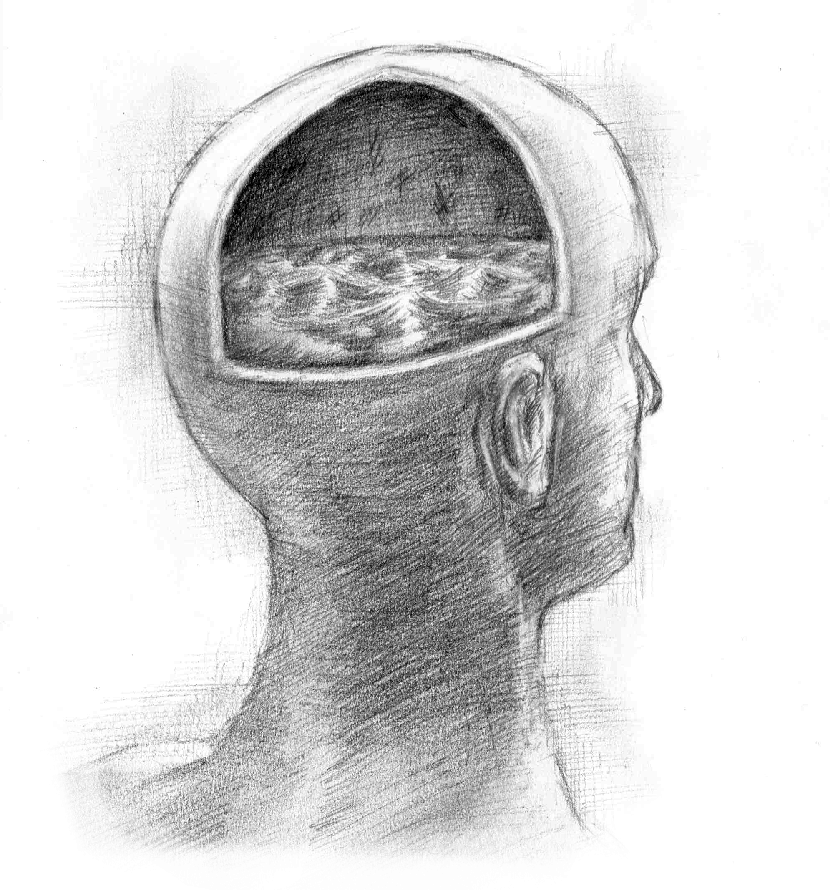

ABOUT THIS ISSUE
Marginalia is a window into the private thoughts of a long-gone reader. It gives us clues to who they are and reveals something forgotten. To scratch up and scrawl, to roll around in the words, to leave our mark in all kinds of ways. Away from the centres, and always at the edge. An ornate frame surrounding a painting. A layer of tattoos on the surface of a torso. A rainbow halo around a lighted moon.
We want work that draws attention to the peripheral, to what is inscribed on the outer edges. To explore what is inherited and what gets left behind. To find where the centres end and the margins begin. To hold a light towards the scratches in our skulls.
FORMATS AND GUIDLINES
We welcome poetry (but please no more than 5 pieces), short fiction, personal essays, letters, reviews, interviews, plays, metafiction and any other experimental literary work, as long as it can be physically printed in an A5 magazine.
There is no hard word limit, but as a general guide, long-form pieces shouldn't exceed more than around 3000 words. Simultaneous submissions are welcome, but please tell us if your work is accepted elsewhere.
We also don't accept reprints and only consider previously unpublished work.
SEND TO
thelovelettermag@gmail.com
DEADLINE
Monday 7th December 2026